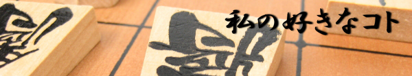
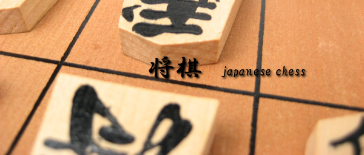
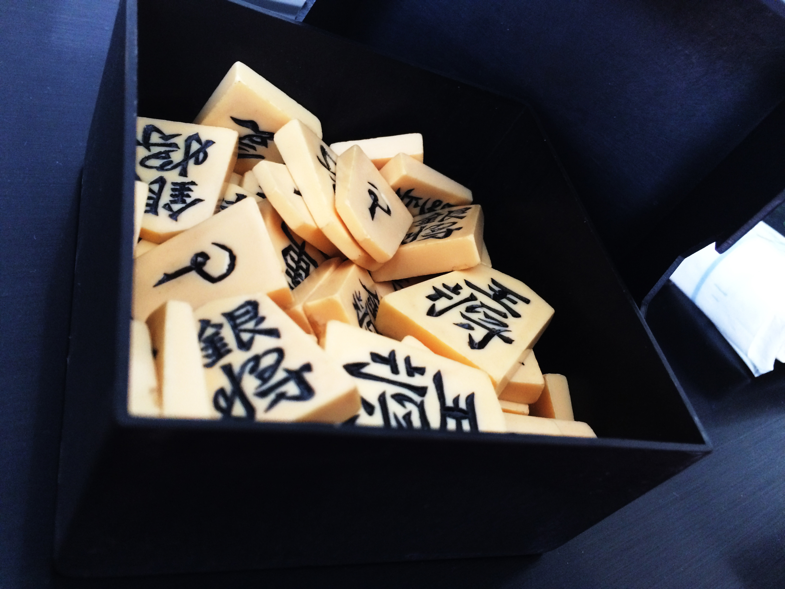
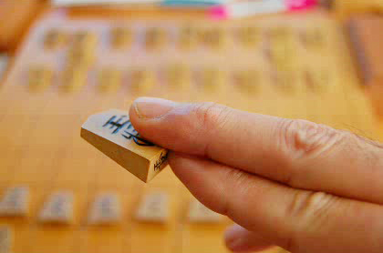

チェスやシャンチーなどと区別するため日本将棋（にほんしょうぎ）ともいい、特に日本の「本将棋」には「持ち駒」の観念があることが特徴とされ、これは諸外国の将棋類似のゲームにも例のない独特のルールである（持ち駒を利用したチェス派生のゲームも考案されている）。『レジャー白書』によると将棋人口は推定600万人である。
| 碁盤や将棋の駒 | 対局の進行 | 勝敗の決め方 |
|---|---|---|
|  |  |
 |
| 将棋の対局には縦横9マスずつに区切られた将棋盤と将棋駒を用いる。将棋の駒は玉将（玉）及び王将（王）、飛車（飛）、角行（角）、金将（金）、銀将（銀）、桂馬（桂）、香車（香）、歩兵（歩）の8種類であり、それぞれ動ける範囲が決まっている。 | 将棋の対局において駒は対局者各20枚ずつの計40枚を用いる。対局者間の棋力の差によって手合割（ハンデ）を考慮する必要もあり、対局者間の棋力の差がかなり大きい場合には駒落ちとなるが、基本的には駒を落さずに対局者各20枚ずつ対等に駒を持つ「平手（ひらて）」で指される。 | 将棋は原則として互いに自らの駒で相手の玉将（王将）を捕獲することを目指し、一方の玉将（王将）が相手の駒に捕獲されてしまうことが不可避な状態（詰み）となれば勝敗が決まる。 |